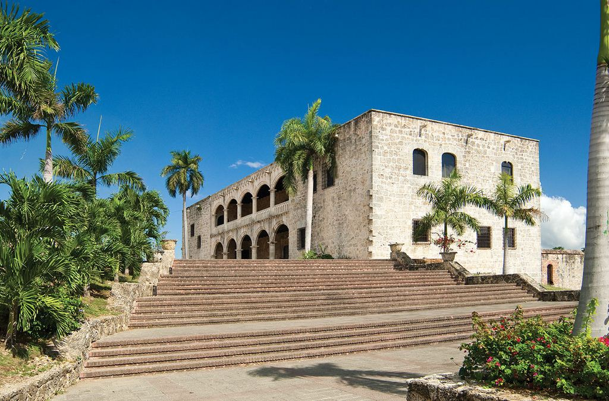
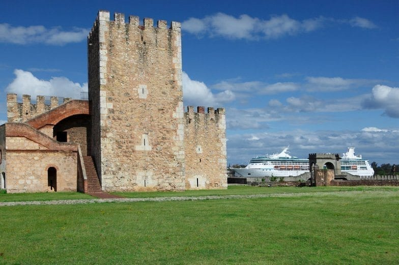
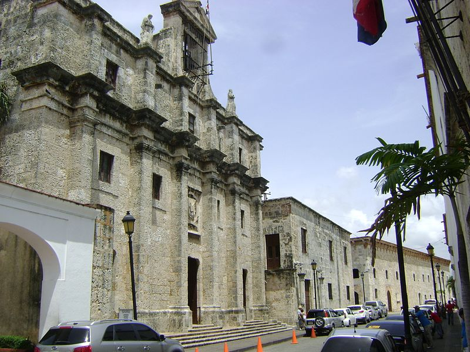
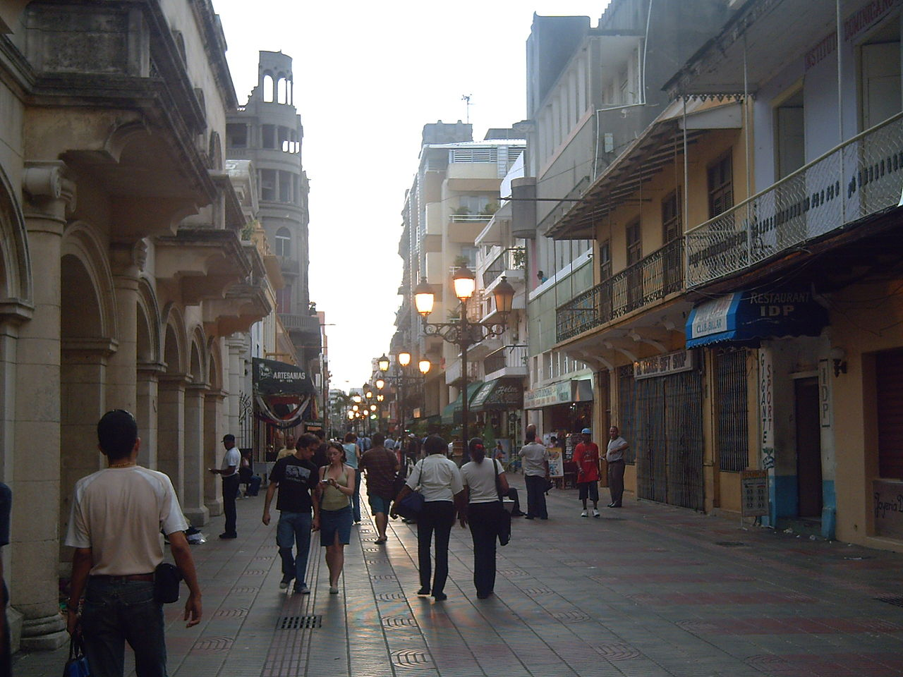
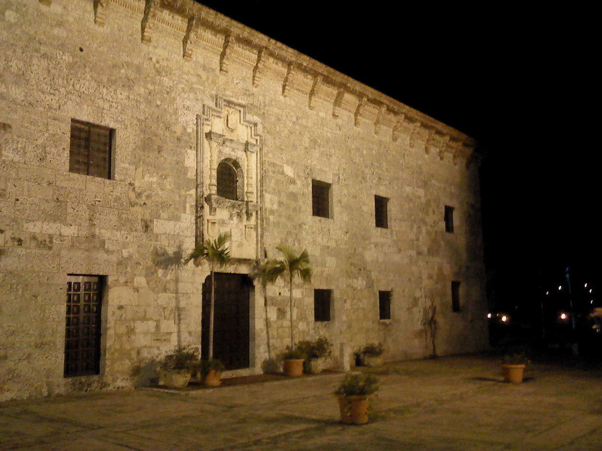
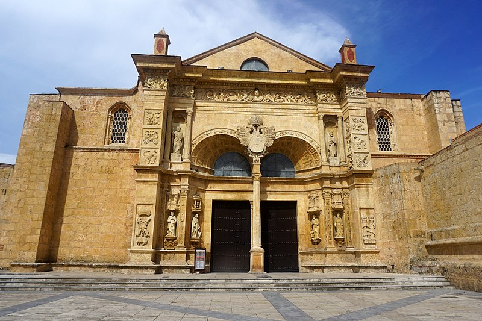
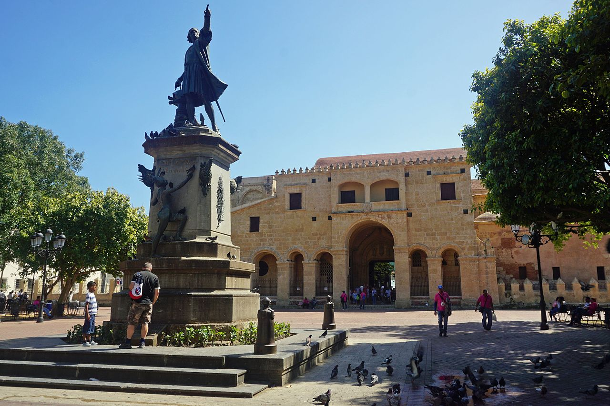
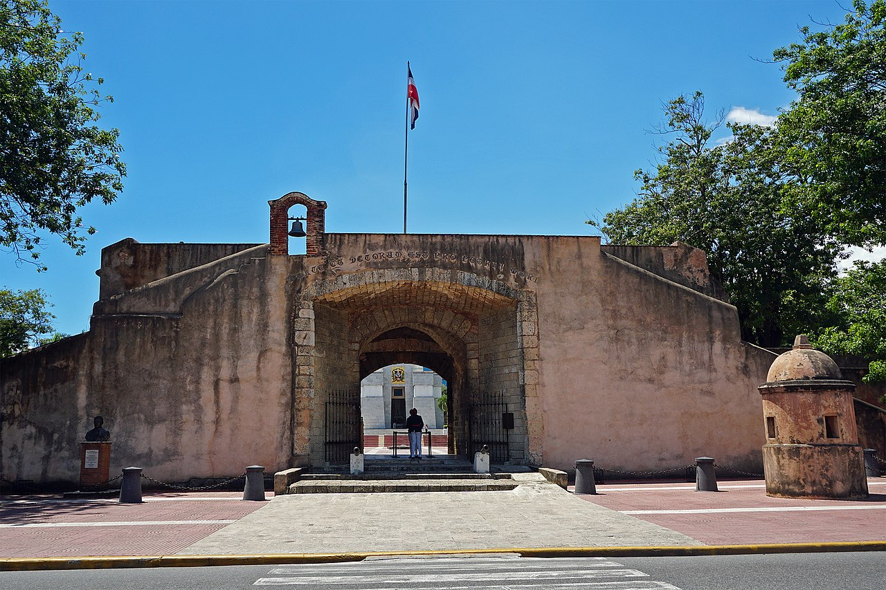

Alcazar de Diego Colón

El Alcázar de Colón fue construido entre 1511 y 1514, siguiendo las influencias del existente en Mancera de Abajo, en Salamanca, España, del que aún se conservan ruinas. Se desconoce el nombre del arquitecto que llevó a cabo la edificación de este palacio fortificado. De estilo gótico mudéjar mayormente, el Alcázar tiene también algunas características renacentistas, notable en sus arcadas, así como del estilo isabelino observables en las borlas que lo adornan. El edificio se construyó utilizando mampostería de rocas coralinas. Originalmente la residencia tenía 55 habitaciones, de las cuales se conservan sólo 22.
Fue el primer palacio fortificado construido en la época hispánica. Por él pasaron grandes conquistadores españoles como Hernán Cortés y Pedro de Alvarado.
Es la única residencia conocida de algún miembro de la familia Colón, además de la casa natal de Cristóbal que se encuentra aún en Génova. En el palacio nacieron Juana, Isabel, Luis y Cristóbal Colón de Toledo, hijos de don Diego Colón y su esposa doña María Álvarez de Toledo. Diego Colón murió en España en 1526 pero María Álvarez de Toledo, su viuda, permaneció en él hasta su fallecimiento en 1549. Tres generaciones de la familia Colón de Toledo lo habitaron, posiblemente hasta el año de 1577.
Fortaleza Ozama

La Fortaleza Ozama forma parte de la Ciudad Colonial de Santo Domingo. Según los historiadores y arquitectos, la construcción de este monumento se prolongó desde 1502 hasta 1508, la cual fue iniciada por el gobernador Nicolás de Ovando.
Su nombre se debe a su ubicación cercana del Río Ozama. Esta fortaleza es asimismo la más antigua de las construcciones hechas en América y en la isla.
El principal objetivo de esta construcción fue proteger a la ciudad de los diversos ataques de los piratas y conquistadores ingleses, franceses y portugueses.
La Fortaleza Ozama fue llamada durante la época colonial Torre del Homenaje, aunque posteriormente era llamada también Torre de la Vigía o de la Vigilancia, ya que en la parte superior se podía observar la entrada del río Ozama y la costa del Mar Caribe.
En 1965, en el mes de abril estalla la Guerra Patria encabezada por un grupo de militares y el pueblo, eligiendo el 4 de mayo al Coronel Caamaño como presidente Constitucional de la República. Durante el Gobierno del Coronel Francisco Alberto Caamaño Deño, la Fortaleza Ozama dejó de ser un recinto militar por la Ley Nro. 11 del Presidente Caamaño, quedando convertida en lugar público, con el nombre de Plaza de la Constitución, Ley contenida en la Gaceta Oficial Nro. 4 de su Gobierno.
Desde la parte más alta de la Fortaleza Ozama se han visto enarbolar durante toda la historia dominicana las banderas de España, Francia, Inglaterra, Haití, Estados Unidos y actualmente la bandera dominicana.
Calle las Damas

La Calle Las Damas, fue la primera calle creada en la Zona Colonial, la cual fue hecha durante el gobierno de Nicolás de Ovando, en esta calle iba desde la Fortaleza Ozama o Torre del Homenaje, hasta las cercanías del Alcázar, los cuales fueron iniciadas alrededor de 1511. Durante la época de la colonia, esta calle era llamada Calle de la Fortaleza, debido a que en ella se encontraba la Fortaleza Ozama.
Según los historiadores, principalmente, Luis Alernar, cuenta que durante la llegada del Segundo Almirante y virrey Diego Colón y la sobrina-nieta del Rey Fernando el Católico, María de Toledo, así como también miembros importantes de la sociedad y jerarquía de España, y damas importantes de la época, tomaron como lugar de residencia la Calle de la Fortaleza.
Tiempo después, los pobladores de la época empezaron a llamar la calle como Calle de Las Damas, pero en 1659, el Ayuntamiendo de la común de Santo Domingo, decidió llamar a la calle como Calle Colón en homenaje a Cristóbal Colón, aunque también era llamada como Calle de la Capitanía General, Calle del Gobierno, Calle del Palacio, y Calle del Convento de Los Jesuítas.
La calle de Las Damas, adquirió su nombre tiempo después, y aún lo conserva; actualmente forma parte de las calles de la Zona Colonial, que en conjunto forman un Patrimonio de la Humanidad.
Calle El Conde

La Calle El Conde, es una antigua calle de la Ciudad Colonial de Santo Domingo. Por un tiempo fue una de las principales calles de Santo Domingo.Su nombre se debe al Conde de Peñalva. Esta calle empieza haciendo dos esquinas, empieza en el Monumento Puerta del Conde, en la intersección con la calle Palo Hincado, y finaliza en una escalera de piedra que lleva a la avenida Francisco Alberto Caamaño. Actualmente es la única calle peatonal de Santo Domingo.
En esta calle fue donde aparecieron los primeros edificios de hormigón, Art Déco y edificios con ascensor en la República Dominicana, como el Edificio Baquero construido en 1927. En esta calle se ubica el primer ayuntamiento de América y la primera catedral de América. En la actualidad es una calle peatonal repleta de comercios, pequeñas plazas, hoteles, restaurantes y lugares turísticos.Pero hay un contraste debido a la gran cantidad de edificios abandonados.
Antiguamente en el período conocido como La danza de los millones, en esta calle había pequeños cines y diversos hoteles. En esa época la calle estaba decorada con pinos y otros árboles que le daban aspecto europeo, mientras que en la actualidad hay mucha decoración caribeña.
Museo de las Casas Reales

El Museo de las Casas Reales o Palacios Reales, como era llamado durante la época de la colonia, tenía como sede dos palacios, los cuales datan del Siglo XVI. Este palacio real se construyó por órdenes de la Corona Española, bajo el reinado de Fernando II de Aragón, el 5 de octubre de 1511, con la finalidad de alojar a las principales oficinas gubernamentales de la época.
Este fue llamado como Edificio de las Casas Reales, ya que en él se encontraba la Real Audiencia, la cual fue el primer tribunal del Nuevo Mundo, también era utilizado como Residencia de los Gobernadores y Generales Capitanes de la época, a éste segundo se le llamaba como Capitanía General.
Este edificio sirvió como morada de muchos personajes importantes, como lo fueron quizás Bartolomé Colón, Louis Ferrand, entre otros.
En los salones de la Real Audiencia se celebraban importantes reuniones o fiestas compuestas por las principales figuras de la sociedad colonial de la época así como los oficiales reales y los jueces de apelación. También participaban los Obispos de la Concepción, Don Pedro Suárez de Deza, y representantes Franciscanos, Dominicos y Mercedarios, además de los propios enconmendaderos.
La Real Audiencia ejerció jurisdicción formalmente sobre toda las islas vecinas, incluyendo Cuba, Puerto Rico, y Jamaica, y también sobre Tierra Firme del Mar Océano, como era conocido en ese entonces, alcanzando su mayor importancia entre los años 1526 y 1540. También desde ahí se discutían los problemas principales, como fueron la Rebelión de Enriquillo, Rebelión de los Indios del Cuzco, establecer las diferencias entre Alvarado y Almagro, buscar la forma de solucionar los problemas territoriales de América Central, Venezuela y la Florida, Luisiana, entre otros..
Durante muchos años su estructura arquitectónica original ha sufrido muchos cambios a lo largo de la historia. En 1807 el general francés Louis Ferrand le dio un estilo francés al edificio. Durante el último año de gobierno del presidente Carlos Felipe Morales Languasco, se realizaron algunas modificaciones para poder utilizar el edificio como Palacio Gubernamental o Casa del Gobierno. Durante el gobierno de Rafael Leónidas Trujillo se hicieron otras modificaciones en yeso para poder colocar allí algunas oficinas gubernamentales.
Catedral Primada de América

La catedral de Santo Domingo es la más antigua de América, construida por mandato del papa Julio II en 1504. Sede de la Arquidiócesis de Santo Domingo, su construcción comenzó en 1512, bajo el gobierno pastoral del primer obispo de Santo Domingo, fray García Padilla, que nunca llegó a la isla; sobre la base de planos del arquitecto Alonso de Rodríguez.
Parados los trabajos, continuaron con un nuevo diseño por Luis de Moya y Rodrigo de Liendo en el 1522 con intervención del obispo Alessandro Geraldini.
El arquitecto Alonso González, inspirándose en la Catedral de Sevilla, concluyó parcialmente la iglesia en el 1540.
Sucesivamente Alonso de Fuenmayor, impulsó los trabajos y el 31 de agosto del año 1541 fue consagrada.
En 1546 el papa Paulo III, la elevó al rango de Catedral Metropolitana y Primada de América a petición del rey Carlos I de España.
Otra promoción llegó en el 1920 cuando el papa Benedicto XV la elevó a “Basílica Menor de la Virgen de la Anunciación”.
En la segunda mitad del siglo XVI, en el lado sur fue construido el sector del Claustro, con las celdas de los canónicos; otro ejemplo se encuentra en la Catedral de Salamanca en España.
En el 1547 se interrumpieron los trabajos de la torre campanario, porque su altura superando la Torre del Homenaje, había dado disturbios a los centinelas.
Fue cuartel general de las tropas de Sir Francis Drake durante su invasión de 1586, quien la saqueó. Al parecer en el 1665 hubo una segunda consagración.
Inicialmente sin capillas, en el 1740 tenía 9 y actualmente posee 14. Merecen mención especial las capillas de Alonso de Suazo, de Rodrígo, de Bastídas, de Geraldini y la de Diego Caballero, así como la cripta de los Arzobispos y la capilla Bautismal lateral.
Entre las obras, el cuadro de N. S. de la Antigua, donado por el Almirante. El órgano fue llevado a Magdeburgo en 1850.
Parque Colón

Durante la época colonial del siglo XV, se llevaron a cabo diversas edificaciones en la isla La Española, las cuales fueron las primeras viviendas coloniales de todo el Continente Americano. Dentro de estas construcciones residenciales fue creado el Parque Colón, el cual fue llamado por el nombre de Plaza Mayor de Santo Domingo, el cual data de 1506, y durante todo el paso de los años hasta nuestros días ha sufrido diversas modificaciones.
Este fue el principal centro de entretenimiento de los habitantes de la época, ya que le daba vida y esplendor del poblado de La Isabela, y sus alrededores. El nombre de Plaza Mayor, fue dado en honor al Comendador Mayor de la orden de Nicolás de Ovando, el cual llegó en 1502 a Santo Domingo. Se debió su nombre aún más, ya que este fue el encargado de trasladar la ciudad a la parte occidental del río Ozama.
Anteriormente fue llamada como Plaza de la Catedral, ya que a unos metros de la plaza se encontraba la Catedral Primada de América. En el centro de este parque se encuentra la estatua del Gran Almirante Cristóbal Colón que apunta con el dedo hacia al norte, y fue una creación del escultor francés E. Gilbert. El 27 de febrero de 1887, fue inaugurado oficialmente como Parque Colón, ya que allí se encontraba la estatua de Colón.
Puerta del Conde

La Puerta del Conde o Baluarte 27 de Febrero (Originariamente llamada Bastión de San Genaro) es un edificio militar del siglo XVII formado por dos cubos macizos con un arco en piedra entre ambos. Completa la instalación militar una parte de la muralla, una fosa en forma triangular orientada hacia el este y varias garitas. La puerta servía de entrada a la ciudad de Santo Domingo.
El nombre es en honor y reconocimiento de Conde de Peñalva (Bernardino de Meneses Bracamonte y Zapata), quien luchó contra la invasión inglesa de William Penn y Robert Venables en 1655.
Por mucho tiempo abandonado fue trasformado en Plaza de toros en el año 1880. En 1883 se le cambió nuevamente el nombre a Puerta del 27 de Febrero.
En 1912 fue convertido en parque. En el cual encontramos sobre el piso esculpida en bronce, la Rosa de los vientos, con las 32 direcciones que dividen el horizonte. De este punto se miden las distancias de toda la isla (km. 0).
En el centro del parque está el “Altar de la Patria”, un Mausoleo de mármol blanco y arriba del portal el Escudo Nacional; en su interior las estatuas de los tres Padres de la Patria: Juan Pablo Duarte, Francisco del Rosario Sánchez y Matías Ramón Mella, cuyos restos reposan en tres nichos ubicados en la parte inferior, donde arde la llama votiva. El Mausoleo fue diseñado por el arquitecto Christian Martínez Villanueva, el mismo que en 1976 restauró la Puerta del Conde. En la esquina norte del parque los restos de la muralla y el Fuerte de la Concepción, el cual cerraba la ciudad rodeada de muros en el lado Oeste.
La Puerta del Conde estaba protegida por un foso que miraba hacia el sector San Carlos, la cual fue una zona importante de guerra utilizada en los tiempos de la colonización, ya que dicho sector posee una altura estratégica para cualquier ataque a Santo Domingo.
Por órdenes de Rafael Leónidas Trujillo, el 27 de febrero de 1933, como un homenaje a todos los febristas es llamada Puerta 27 de Febrero, pero todos los dominicanos por costumbre le llaman Puerta del Conde. En 1935 es declarada por el Estado Dominicano como Monumento Nacional Dominicano y en 1943 se trasladaron desde la Capilla de los Inmortales de la Catedral de Santo Domingo los restos de los tres principales Padres de la Patria de la República Dominicana Juan Pablo Duarte, Francisco del Rosario Sánchez y Matías Ramón Mella. En su arco hay una inscripción latina que dice ¨Dulce et decorum est pro patria mori¨, que se traduce al Español como: "Dulce y honorable es morir por la patria".